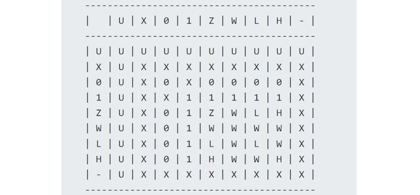

Tutorial: VHDL Pitfalls#
- Pitfall 1: Inferring Flip-Flops vs. Latches
- Pitfall 2: Multiple-Driver Conflict
- Pitfall 3: Sensitivity Lists for Processes
- Pitfall 4: Reading Output Signals Inside the Architecture
- Pitfall 5: Signals vs. Variables
- Pitfall 6: Incorrect Type Signal Assignments
- Pitfall 7: Single vs. Separate Processes for Synchronous Design
Pitfall: Inferring Flip-Flops vs. Latches#
Consider the following VHDL code which demonstrates a common pitfall involving inference of flip-flops and latches, which may lead to unintended or mismatched hardware behavior.
LIBRARY IEEE;
USE IEEE.std_logic_1164.ALL;
ENTITY top IS
PORT (
ACLR : IN STD_LOGIC; -- asynchronous clear
CLK : IN STD_LOGIC; -- clock
D : IN STD_LOGIC;
Q : OUT STD_LOGIC_VECTOR(1 DOWNTO 0)
);
END ENTITY;
ARCHITECTURE rtl OF top IS
SIGNAL q_int : STD_LOGIC_VECTOR(1 DOWNTO 0) := "00";
BEGIN
-- 1) Infer a positive edge-triggered D flip-flop.
q_int(0) <= '0' when ACLR='1' else
D when rising_edge(CLK) else q_int(0);
-- 2) Infer a positive level-sensitive D latch.
q_int(1) <= '0' when ACLR='1' else
D when CLK = '1' else q_int(1);
-- 3) Output signal assignments (inverting output)
Q <= not q_int;
END ARCHITECTURE;
The first assignment correctly infers a positive-edge-triggered D flip-flop,
since it uses rising_edge(CLK) to trigger output update and
includes asynchronous clear logic (ACLR).
The second assignment uses CLK = '1', which causes the synthesis tool to infer
a level-sensitive D latch.

Figure: Schematic of the synthesized logic circuit (D-FF vs. D-Latch)
The same behavior can be expressed more explicitly using PROCESS statements:
LIBRARY IEEE;
USE IEEE.std_logic_1164.ALL;
ENTITY top IS
PORT (
ACLR : IN STD_LOGIC;
CLK : IN STD_LOGIC; -- clock
D : IN STD_LOGIC;
Q : OUT STD_LOGIC_VECTOR(1 DOWNTO 0)
);
END ENTITY;
ARCHITECTURE rtl OF top IS
SIGNAL q_int : STD_LOGIC_VECTOR(1 DOWNTO 0) := "00";
BEGIN
-- 1) Infer a positive edge-triggered D flip-flop.
dff_proc: PROCESS (ACLR, CLK)
BEGIN
IF ACLR = '1' THEN
q_int(0) <= '0';
ELSIF rising_edge(CLK) THEN
q_int(0) <= D;
END IF;
END PROCESS;
-- Infer a positive level-sensitive D latch.
dlatch_proc: PROCESS (ACLR, CLK, D)
BEGIN
IF ACLR = '1' THEN
q_int(1) <= '0';
ELSIF CLK='1' THEN
q_int(1) <= D;
END IF;
END PROCESS;
-- Output signal assignments (inverting output)
Q <= not q_int;
END ARCHITECTURE;
Pitfall: Multiple-Driver Conflict#
Consider the following VHDL (VHDL-2008) code.
Code Example 1#
LIBRARY IEEE;
USE IEEE.std_logic_1164.ALL;
ENTITY top IS
PORT (
I0 : IN STD_LOGIC;
I1 : IN STD_LOGIC;
EN0 : IN STD_LOGIC;
EN1 : IN STD_LOGIC;
Y : OUT STD_LOGIC
);
END ENTITY;
ARCHITECTURE behavior OF top IS
BEGIN
-- Tristate buffer for input A
Y <= I0 WHEN EN0 = '1' ELSE 'Z';
-- Tristate buffer for input B
Y <= I1 WHEN EN1 = '1' ELSE 'Z';
END ARCHITECTURE;
The signal Y is assigned in two concurrent signal statements,
which uses multiple signal drivers in VHDL.
If we use EN0 = not EN1 and use this as a select signal (SEL),
this implements a MUX2_1 circuit.
If both EN0 and EN1 are '1' at the same time and
I0 and I1 are different,
then a conflict occurs on the output Y, which may result in:
- Simulation warnings or 'X' values.
- Electrical contention in real hardware if mapped to actual tri-state outputs.
To avoid conflict, make sure that EN0 and EN1 are mutually exclusive
(i.e., never high at the same time).
The tristate buffers will be set up using the I/O blocks of the FPGA chip, which are designed to support tristate output. These I/O blocks are configured to enable tristate driving. In addition, a pull-up resistor or an internal weak pull-up is required.
We can rewrite the VHDL code using a with-select statement,
that clearly addresses all possible combinations of (EN0, EN1):
The original version does not prevent both drivers being active,
this version infer safe tri-state behavior on physical I/O pins.
ARCHITECTURE rtl OF top IS
BEGIN
-- Tristate MUX using with-select
WITH EN1 & EN0 SELECT
Y <= I0 WHEN "01",
I1 WHEN "10",
'Z' WHEN OTHERS;
END ARCHITECTURE;
Code Example 2#
In the following code, the signal t is assigned
by two concurrent assignment statements, which
can infer two latches (Implicit Latch Inference).
In VHDL, each concurrent signal assignment is
effectively interpreted as an independent process.
Therefore, t ends up with multiple signal drivers,
resulting in a multi-driver conflict.
LIBRARY IEEE;
USE IEEE.std_logic_1164.ALL;
ENTITY top IS
PORT (
I0 : IN STD_LOGIC;
I1 : IN STD_LOGIC;
EN0 : IN STD_LOGIC;
EN1 : IN STD_LOGIC;
Q : OUT STD_LOGIC
);
END ENTITY;
ARCHITECTURE rtl OF top IS
SIGNAL t : STD_LOGIC := '0';
BEGIN
-- The following two statements cause a multi-driver problem!
t <= I0 WHEN EN0 = '1' else t; -- D Latch
t <= I1 WHEN EN1 = '1' else t; -- D Latch
Q <= t;
END ARCHITECTURE;
VHDL Signal Resolution#
In VHDL, when multiple drivers are connected to the same signal — like from tri-state buffers or concurrent assignments — VHDL needs to resolve or figure out or what the actual value of that signal should be. This process is known as signal resolution.
The STD_LOGIC type is a resolved type, which means it can handle multiple drivers, while STD_ULOGIC is unresolved and doesn’t support that kind of setup.
Resolution Table for STD_LOGIC

U: UninitializedX: Invalid0: Strong Low1: Strong HighZ: High ImpedanceW: Weak UnknownL: Weak LowH: Weak High-: Don't Care
Pitfall: Sensitivity Lists for Processes#
In VHDL, the sensitivity list of a process determines when the process should be "re-evaluated" to update signals' state. For sequential logic (like flip-flops), the sensitivity list typically includes:
- Asynchronous control signals (e.g., reset or clear)
- Clock signal (e.g. edge-triggered for D flip-flops or level-sensitive for D latches)
The process in the followiong VHDL code models a clocked flip-flop with asynchronous clear.
LIBRARY IEEE;
USE IEEE.std_logic_1164.ALL;
ENTITY top IS
PORT (
ACLR : IN STD_LOGIC; -- asynchronous clear
CLK : IN STD_LOGIC; -- clock
CE : IN STD_LOGIC; -- clock enable
D : IN STD_LOGIC;
Q : OUT STD_LOGIC
);
END ENTITY;
ARCHITECTURE rtl OF top IS
BEGIN
-- The sensitivity list of this process
PROCESS (ACLR, CLK)
BEGIN
IF ACLR = '1' THEN
Q <= '0';
ELSIF RISING_EDGE(CLK) THEN
IF CE = '1' THEN -- clock enable
Q <= D;
END IF;
END IF;
END PROCESS;
END ARCHITECTURE;
Both CE and D are used only within a conditional block that is executed on
the rising edge of CLK.
The process evaluates CE and D only when there is a rising edge on CLK.
Therefore, signals CE (Clock Enable) and D (Data input) do not need to
be included in the process sensitivity list.
However, missing signals in the sensitivity list cause simulation mismatches since processes may not trigger as expected.

Figure: Schematic of the synthesized logic circuit (a D-type flip-flop)
Pitfall: Reading Output Signals Inside the Architecture#
In VHDL, a signal declared as OUT cannot be read inside the architecture body.
An OUT port of a signal is intended only for driving values out of the entity.
To read and write the same signal internally, the following methods can be used either:
- Use a
BUFFERmode port (deprecated and should be avoided) - Use an
INOUTport with appropriate direction control (e.g., tri-state logic) - Use an internal signal for reading and writing,
and assign it to the
OUTport.
Uninitialized Signals: Signals without initial values may start with 'U' (undefined), leading to unexpected simulation results.
When simulating the VHDL code below, the initial value of
the Q output is unknown ('U') until the ACLR input is asserted.
If CE is '1' and the value of Q is read for a signal update
on the next rising edge of the clock, the result will be invalid ('X'),
since reading from an OUT port is not defined behavior.
LIBRARY IEEE;
USE IEEE.std_logic_1164.ALL;
ENTITY top IS
PORT (
ACLR : IN STD_LOGIC; -- asynchronous clear
CLK : IN STD_LOGIC; -- clock
CE : IN STD_LOGIC; -- clock enable
Q : OUT STD_LOGIC
);
END ENTITY;
ARCHITECTURE rtl OF top IS
BEGIN
-- The sensitivity list of this process
PROCESS (ACLR, CLK)
BEGIN
IF ACLR = '1' THEN
Q <= '0';
ELSIF RISING_EDGE(CLK) THEN
IF CE = '1' THEN
Q <= not Q; -- not allowed (reading from an OUT port)!
END IF;
END IF;
END PROCESS;
END ARCHITECTURE;
The previous VHDL code can be rewritten as follows.
ARCHITECTURE rtl OF top IS
SIGNAL q_int : STD_LOGIC := '0'; -- internal signal
BEGIN
PROCESS (ACLR, CLK)
BEGIN
IF ACLR = '1' THEN
q_int <= '0';
ELSIF RISING_EDGE(CLK) THEN
IF CE = '1' THEN
q_int <= NOT q_int; -- toggle internal signal
END IF;
END IF;
END PROCESS;
Q <= q_int; -- drive output from internal signal
END ARCHITECTURE;
q_int is an internal signal declared as STD_LOGIC
with an initial value of 0.
It is used to store the internal state of the toggling logic and
is safely read and written inside the process.
The Q output is assigned from q_int outside the process,
which avoids reading the OUT port directly and ensures proper synthesis behavior.

Figure: Schematic of the synthesized logic circuit (a toggle flop-flop)
Pitfall: Signals vs. Variables#
In VHDL, signals and variables have data types and values.
- Variables declared in a process are visible only inside the body of that process, while signals are visible inside the architecture body.
- Signals are used for inter-process communication, while variables are used only inside a process.
- Variables are updated immediately when assigned using the
:=operator, while signals use the<=operator and are updated after the current process is suspended, either at the end of the delta cycle or when awaitcompletes. - Each new viable assignment updates the value immediately. while multiple signal assignments in the same process will queue updates, and only the last one will overwrite the previous assignments.
Consider the following VHDL code, which is intended to compute
the parity bit of the data bits provided by the D input signal, using XOR operators.
However, this code is incorrect.
LIBRARY IEEE;
USE IEEE.std_logic_1164.ALL;
ENTITY top IS
GENERIC (
N : NATURAL := 4
);
PORT (
CLK : IN STD_LOGIC;
D : IN STD_LOGIC_VECTOR(N-1 DOWNTO 0);
Q : OUT STD_LOGIC
);
END ENTITY;
ARCHITECTURE rtl OF top IS
SIGNAL sum : STD_LOGIC := '0';
BEGIN
PROCESS (CLK)
BEGIN
IF rising_edge(CLK) THEN
FOR i in 0 to N-1 LOOP
sum <= sum XOR D(i); -- signal assignment
END LOOP;
END IF;
END PROCESS;
Q <= sum;
END ARCHITECTURE;
Problem: Inside the FOR loop, the signal sum is assigned multiple times sequentially
within the same clock cycle.
Cause: In VHDL, signal assignments are scheduled, not executed immediately. As a result, only the last assignment to sum in the loop takes effect after the clock edge — all previous assignments are effectively ignored. This results in an incorrect parity computation.
A correct version is shown below.
ARCHITECTURE rtl OF top IS
SIGNAL sum : STD_LOGIC := '0';
BEGIN
PROCESS (CLK)
VARIABLE sum : STD_LOGIC := '0';
BEGIN
IF rising_edge(CLK) THEN
FOR i in 0 to N-1 LOOP
sum := sum XOR D(i); -- variable assignment
END LOOP;
END IF;
Q <= sum;
END PROCESS;
END ARCHITECTURE;

Figure: Schematic of the synthesized logic circuit (XOR-based parity bit generator with a registered output)
Pitfall: Incorrect Type Signal Assignments#
VHDL is a strictly typed HDL and supports various types for signals, variables, and constants used to represent multi-bit values. Common types include:
STD_LOGIC_VECTORSTD_ULOGIC_VECTORBIT_VECTORUNSIGNEDINTEGERNATURAL
For example, when implementing a counter, the internal register
is often modeled as a signal updated on the rising edge of a clock.
This signal can be of type INTEGER, which is convenient for arithmetic operations.
To interface with hardware (e.g., output to LEDs), the INTEGER value
may need to be converted to UNSIGNED or STD_LOGIC_VECTOR of a specific bit width.
The following VHDL code shows an implementation of a down counter
whose maximum value is set by MAX_VALUE.
It counts down on every rising edge of the CLK signal,
provided that CE (clock enable) is high.
LIBRARY IEEE;
USE IEEE.std_logic_1164.ALL;
USE IEEE.numeric_std.ALL;
USE IEEE.math_real.ALL;
ENTITY top IS
GENERIC (
MAX_VALUE : NATURAL := 9;
BW : NATURAL := INTEGER(ceil(log2(real(MAX_VALUE + 1))))
);
PORT (
ACLR : IN STD_LOGIC;
CLK : IN STD_LOGIC;
CE : IN STD_LOGIC;
Q : OUT STD_LOGIC_VECTOR(BW - 1 DOWNTO 0)
);
END ENTITY;
ARCHITECTURE rtl OF top IS
CONSTANT INIT_VALUE : INTEGER := MAX_VALUE;
SIGNAL cnt : INTEGER RANGE 0 TO MAX_VALUE
:= INIT_VALUE;
BEGIN
PROCESS (ACLR, CLK)
BEGIN
IF ACLR = '1' THEN -- asynchronous reset
cnt <= INIT_VALUE; -- initialize the counter register
ELSIF rising_edge(CLK) THEN -- edge triggered
IF CE = '1' THEN -- clock enabled
IF cnt = 0 THEN
cnt <= INIT_VALUE; -- reload the counter register
ELSE
cnt <= cnt - 1; -- decrement the counter register
END IF;
ELSE
END IF;
END IF;
END PROCESS;
Q <= STD_LOGIC_VECTOR(to_unsigned(cnt, BW));
END ARCHITECTURE;
Pitfall: Single vs. Separate Processes for Synchronous Design#
In synchronous VHDL design like counters and FSMDs (finite-state machines with datapaths), there are two modeling approaches: using either a single clocked process or multiple processes (e.g., separate for state updates and combinational logic). Both styles synthesize to equivalent hardware, but each has trade‑offs. However, the single-Process style is preferred by many designers and easier to maintain.
Single-Process Style: This is a single-process implementation of an N-bit counter.
LIBRARY IEEE;
USE IEEE.std_logic_1164.ALL;
USE IEEE.numeric_std.ALL;
ENTITY top IS
GENERIC (
N : NATURAL := 4
);
PORT (
CLK : IN STD_LOGIC;
CE : IN STD_LOGIC;
Q : OUT STD_LOGIC_VECTOR(N - 1 DOWNTO 0)
);
END ENTITY;
ARCHITECTURE rtl OF top IS
SIGNAL q_int : UNSIGNED(N - 1 DOWNTO 0) := (OTHERS => '0');
BEGIN
PROCESS (CLK)
BEGIN
IF rising_edge(CLK) THEN
IF CE = '1' THEN
q_int <= q_int + 1;
END IF;
END IF;
END PROCESS;
Q <= STD_LOGIC_VECTOR(q_int);
END ARCHITECTURE;
Separate Sequential + Combinational Logic:
This code separates combinational and sequential logic.
ARCHITECTURE rtl OF top IS
SIGNAL q_int : UNSIGNED(N-1 DOWNTO 0) := (others => '0');
SIGNAL q_next : UNSIGNED(N-1 DOWNTO 0);
BEGIN
-- This is a concurrent signal assignment (equivalent to a process)
-- used to compute the next value of the counter.
q_next <= q_int + 1;
update_counter_proc: PROCESS (CLK)
BEGIN
IF rising_edge(CLK) THEN
IF CE = '1' THEN
q_int <= q_next;
END IF;
END IF;
END PROCESS;
Q <= std_logic_vector( q_int );
END ARCHITECTURE;
This work is licensed under a Creative Commons Attribution-ShareAlike 4.0 International License.
Created: 2025-06-21 | Last Updated: 2025-06-21